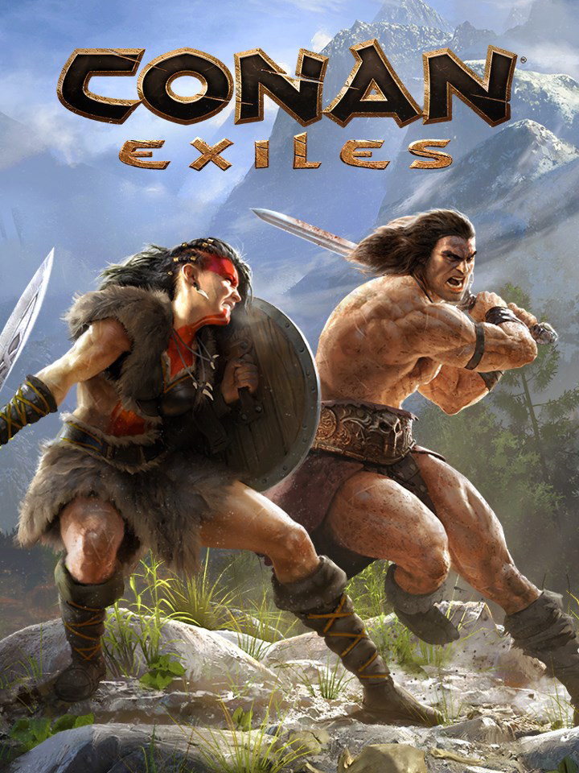

Conan Exiles
Conan Exiles
Details
|  | |
| Spielzeit | 12h 20m 0s |
| Letzte Aktivität | 30.09.2020 20:22:57 |
| Hinzugefügt | 19.12.2019 |
| Modifiziert | 12.12.2022 0:59:26 |
| Fertigstellungsstatus | Gespielt |
| Bibliothek | Steam |
| Quelle | Steam |
| Plattform | PC (Windows) |
| Veröffentlichungsdatum | 08.05.2018 |
| Community Bewertungen | 67 |
| Kritiker Punkte | 68 |
| Benutzerwertung | |
| Genre | Action Adventure Simulation |
| Entwickler | Funcom |
| Verleger | Funcom |
| Eigenschaft | Achievements Controller Support Co-op Multiplayer Single Player Steam Karten Workshop |
| Links | Community Hub Discussions News Store Page PCGamingWiki Achievements Workshop |
| Tag | Achievements Co-Op Full Controller Support Online Pvp Steam Workshop |
Beschreibung
Edition Comparison

About the Game
Conan Exiles is an online multiplayer survival game set in the lands of Conan the Barbarian. Enter a vast, open-world sandbox and play together with friends and strangers as you build your own home or even a shared city. Survive freezing cold temperatures, explore loot-filled dungeons, develop your character from a lowly peasant to a mighty barbarian, and fight to dominate your enemies in epic siege wars.Conan Exiles can be played in full single-player, co-op, or persistent online multiplayer.
After Conan himself saves your life by cutting you down from the corpse tree, you must quickly learn to survive. Weather scouring sandstorms, shield yourself from intense temperatures and hunt animals for food and resources. Explore a vast and seamless world, from the burning desert in the south to the snow-capped mountains of the north.
Forge the legacy of your clan as you fight to reclaim and dominate the Exiled Lands. Use the powerful building system to create anything from a small home to entire cities piece by piece. Wage war using swords, bows, siege weapons, and even take control of giant avatars of the gods to crush the homes of your enemies in epic battles.
EXPLORE A VAST, OPEN WORLD
Journey through a massive and seamless open world. From the rolling sand dunes of the southern desert, through the mysterious eastern swamp and the snow-capped mountains of the frozen north. Climb anywhere and experience full freedom of exploration.
BUILD A HOME AND A KINGDOM
Harvest resources to craft tools and weapons, then build anything from a small home to entire cities piece by piece using a powerful building system. Place traps, elevators, and defenses, then deck out your creations with furniture, crafting stations, and more.
SURVIVE IN A SAVAGE LAND
Dress well or light a campfire to stay warm and make sure to cool yourself down in the heat. Hunt, cook, eat, and drink to stay alive. Build a shelter to weather scouring sandstorms. Be careful when exploring darkened ruins or you might become corrupted by foul magic.
DOMINATE THE EXILED LANDS
Carve out your piece of the Exiled Lands, taking it from other players if you must! Build siege weapons and use explosives to break down the walls of your enemy’s city. Place out traps, recruit thralls, and build defenses to keep your enemies from invading yours.
BRUTAL, BLOODY COMBAT
Fight vicious monsters and other players using an action-oriented, combo-based combat system. Dodge, block, and learn to master the true art of combat to become the greatest fighter in the Exiled Lands. Slay using bows, daggers, swords, axes, and more.
BECOME A TOWERING GOD
Alight yourself with one of four deities such as Derketo, the goddess of lust and death. Bring your sacrifices to the altar of your god then summon and take control of their huge, towering avatar. Crush enemies and entire buildings under your avatar’s feet.
DEFEND YOUR BASE FROM INVADING MONSTERS
Eventually you will attract the attention of monsters and other NPC inhabitants of the Exiled Lands, causing a Purge event. Depending on where you built your home, different types of monsters will attack and try to destroy it. Plan your defenses well!
ENSLAVE THRALLS TO DO YOUR BIDDING
Enslave the criminals of the Exiled Lands and make them join your cause and defend your territory. Put them through the grueling Wheel of Pain to break their will, then turn them into archers, fighters, crafters, entertainers, and more.
DISCOVER THE RUINS OF ANCIENT CIVILIZATIONS
From the Black Keep in the north to the Dregs along the southern river, discover the ruins of ancient civilizations and solve their mysteries to gain access to their treasure. Uncover the history of the Exiled Lands you as you explore, uncover lore, and meet NPCs.
PLAY TOGETHER OR ALONE
Play alone locally or fight for survival and dominance in persistent multiplayer on public servers. You can also host your own server and invite others to join you in a world where you have full control of the rules and settings. Want to play with just handful of friends? Try co-op mode!
CONTROL YOUR EXPERIENCE
When playing alone locally or on a server you are the administrator of you have access to a range of in-game tools. Change your progression speed, spawn monsters, turn yourself invisible, deactivate avatars, and much more. Be the dungeon master of your own server.
PLAY WITH MODS
Download Conan Exiles mods directly from the Steam workshop to customize your game experience. You can also download the custom Conan Exiles Unreal Editor and start creating your own. You can discover more than 450 mods right now!
Conan Exiles subreddit: https://www.reddit.com/r/ConanExiles/
Official website: http://www.conanexiles.com